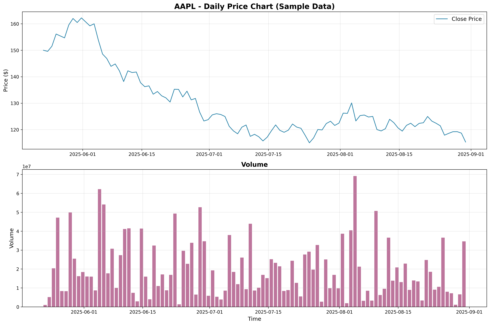

üí° Note: This report uses sample data generated by our system to demonstrate the visualization capabilities.
In a real scenario, this would be actual market data from Yahoo Finance.
üéØ What This Report Shows
- Price Analysis: Daily price movements with volume analysis
- Technical Indicators: 15+ professional indicators including SMA, EMA, RSI, MACD, Bollinger Bands
- Trend Analysis: Moving averages and momentum indicators
- Market Conditions: Overbought/oversold levels, volatility analysis
- Performance Metrics: Cumulative returns and statistical distributions
üìà Price and Volume Analysis

This chart shows the daily closing prices and trading volume over a 1-year period.
The price chart helps identify trends, while volume confirms the strength of price movements.
üïØÔ∏è Candlestick Chart
A candlestick representation showing daily price ranges. Green bars indicate price increases,
red bars show decreases. This format is essential for technical analysis and pattern recognition.
üîß Technical Analysis Dashboard
Comprehensive technical analysis showing price with multiple moving averages (SMA 20, SMA 50, EMA 12, EMA 26),
Bollinger Bands for volatility, RSI for momentum, and MACD for trend confirmation.
üìä Stochastic Oscillator
The Stochastic Oscillator measures momentum by comparing closing prices to their range over time.
Values above 80 indicate overbought conditions, below 20 suggest oversold conditions.
üìã Summary Dashboard
Four-panel summary showing cumulative returns, volume distribution, RSI distribution, and MACD histogram.
This provides a comprehensive overview of market performance and indicator behavior.
üöÄ Key Features Demonstrated
- Professional Charts: Publication-quality visualizations with proper styling and colors
- Technical Indicators: Industry-standard indicators calculated with NumPy for performance
- Multi-Timeframe Analysis: Support for various data periods and intervals
- Sample Data Fallback: System works even when external APIs are unavailable
- Comprehensive Analysis: From basic price charts to advanced technical analysis